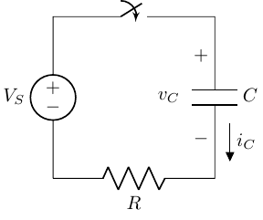

Complex Impedance
BME253L - Fall 2025
Learning Objectives
Understand the concept of complex impedance and how it extends the idea of impedance to AC circuits with capacitors and inductors.
Analyze AC circuits using complex impedance and phasor techniques.
Apply complex impedance to solve for voltages and currents in circuits with resistors, capacitors, and inductors.
Phasors and Complex Numbers
Phasors are a way to represent sinusoidal functions as complex numbers of amplitude and phase in the frequency domain.
A sinusoidal voltage or current at a given, single frequency can be represented as: \[ \begin{gather} V_c(t) = V_A \cos(\omega t + \phi) \\ V_c(t) = V_A \text{Re} \left\{ e^{j\omega t + \phi} \right\} \\ V_c(t) = \text{Re} \left\{ V_A e^{j\phi} e^{j\omega t} \right\} \\ \textrm{Drop the sinusoidal time dependence for simplicity...} \\ \bar{V} = V_A e^{j\phi} = V_A \angle \phi \\ \end{gather} \]
where \(V_A\) is the amplitude, \(\omega\) is the angular frequency, and \(\phi\) is the phase angle. The phasor \(\tilde{V}\) is a complex number.
The time dependence \(e^{j\omega t}\) is often omitted in phasor notation, as it is understood to be present.
Phasors allow us to use complex algebra to analyze AC circuits, simplifying the calculation of voltages and currents.
\[ \begin{gather} I_c = C \frac{d V_c}{dt} = C \frac{d}{dt} \left( V_c \cos(\omega t + \phi) \right) \\ \textrm{Remember: } \frac{d}{dt} \cos(\omega t) = -\omega \cdot \sin(\omega t) \\ I_c = -\omega C V_c \sin(\omega t + \phi) = \omega C V_c \cos\left(\omega t + \phi + \frac{\pi}{2}\right) \end{gather} \] The phasor representation of the current is: \[ \bar{I}_c = j \omega C \bar{V}_c \]
- The phase difference between the voltage and current in a capacitor is \(\frac{\pi}{2}\) radians (90 deg), with the current leading the voltage, which is represented with the imaginary unit \(j\) in the phasor equation.
What does this look like in the complex plane?
Does a Resistor Have Complex Impedance?
- Short answer: No.
\[ \begin{gather} v_R(t) = R i_R(t) \\ v_R(t) = Re\left\{ \bar{V}_R e^{(j\omega t + \phi)} \right\} \\ i_R(t) = Re\left\{ \bar{I}_R e^{(j\omega t + \phi)} \right\} \\ \bar{V}_R = \bar{I}_R \cdot R \\ \end{gather} \]
What does this look like on the complex plane?
\(\bar{V}_R\) and \(\bar{I}_R\) are in phase.
Amplitude is governed by Ohm’s law: \(V_A = R I_A\).

Complex Impedance of a Capacitor
\[ \begin{gather} v_c(t) = Re\left\{ \bar{V}_c e^{j\omega t} \right\} \\ i_c(t) = C \frac{d v_c(t)}{dt} \\ i_c(t) = C Re\left\{ \frac{d}{dt} \left( \bar{V}_c e^{j\omega t} \right) \right\} \\ i_c(t) = C Re\left\{ j \omega \bar{V}_c e^{j\omega t} \right\} \\ i_c(t) = Re\left\{ j \omega C \bar{V}_c e^{j\omega t} \right\} \\ \bar{I}_c = j \omega C \bar{V}_c \\ \bar{V}_c = \frac{1}{j \omega C} \bar{I}_c = \frac{-j}{\omega C} \bar{I}_c \\ \end{gather} \]
The complex impedance (\(Z_c\)) of a capacitor is defined as the ratio of the phasor voltage to the phasor current:
\[ Z_c = \frac{\bar{V}_c}{\bar{I}_c} = \frac{1}{j \omega C} = \frac{-j}{\omega C} \]
Larger capacitance (\(C\)) leads to longer charging times.
Higher frequency (\(\omega\)) represents more rapid changes in voltage, meaning less time to charge in each phase of a cycle, so lower impedance to current flow.
The \(j\) in the denominator indicates a phase shift of -90 degrees (current leads voltage).
The impedance is purely imaginary, indicating that the capacitor does not dissipate energy but rather stores it in the electric field.
This frequency-dependent behavior will be the foundation for designing filters.
\(Z_c\) in the Time Domain
\[ \begin{gather} \bar{V}_c = \frac{\bar{I}_c}{j \omega C} = -j \frac{\bar{I}_c}{\omega C} = \frac{1}{\omega C} e^{-j \frac{\pi}{2}} (\bar{I}_c e^{j \phi}) \\ \bar{V}_c = \frac{I_c}{\omega C} e^{j(\phi - \frac{\pi}{2})} \\ \end{gather} \]
- Capacitor voltage lags current by \(\frac{\pi}{2}\) (90 deg).
Example: RC Circuit with a Switch

- The switch is closed at \(t=0\), connecting the voltage source to the series RC circuit.
\[ \begin{gather} v_C|_{t=0} = 0 \\ i_C = \frac{V_S}{R} \\ \end{gather} \]
The capacitor voltage cannot change instantaneously, so it starts at 0 V and behaves like a short circuit for an instant until it starts to accumulate charge.
As time evolves, the capacitor charges, and its voltage increases, reducing the current through the circuit.
Complex Impedance of an Inductor
\[ \begin{gather} v_L(t) = L \frac{d i_L(t)}{dt} \\ v_L(t) = L \frac{d}{dt} Re\left\{ \bar{I}_L e^{j\omega t} \right\} \\ v_L(t) = L Re\left\{ j \omega \bar{I}_L e^{j\omega t} \right\} \\ v_L(t) = Re\left\{ j \omega L \bar{I}_L e^{j\omega t} \right\} \\ \bar{V}_L = j \omega L \bar{I}_L \\ \bar{I}_L = \frac{1}{j \omega L} \bar{V}_L \\ \end{gather} \]
The complex impedance (\(Z_L\)) of an inductor is defined as the ratio of the phasor voltage to the phasor current:
\[ Z_L = j \omega L = \frac{\bar{V}_L}{\bar{I}_L} \]
Larger inductance (\(L\)) means more opposition to changes in current.
Higher frequency (\(\omega\)) means that transient voltage changes occur more rapidly, leading to greater opposition to current flow.
\[ \begin{align} \bar{V}_L & = j \omega L \bar{I}_L = j \omega L (I_L e^{j\phi}) \\ & = \omega L I_L e^{\frac{\pi}{2}} e^{j\phi} \\ & = \omega L I_L e^{j(\phi + \frac{\pi}{2})} \\ \end{align} \]
The \(j\) indicates a phase shift of +90 degrees (voltage leads current).
The impedance is purely imaginary, indicating that the inductor does not dissipate energy but rather stores it in the magnetic field.

Example: RL Circuit with a Switch
When the switch closes at \(t=0\):
\(v_L\) = \(V_S\) (initially behaves like an open circuit)
\(i_L\) = 0 A (initially no current through the inductor)
Impedance Summary
“Ohm’s Law” for capacitors and inductors in the phasor domain: \[ \bar{V} = Z \bar{I} \]
Resistor: \(Z_R = R\) (purely real)
Capacitor: \(Z_C = \frac{1}{j \omega C}\)
Purely imaginary, negative
Voltage lags current by 90 degrees
Inductor: \(Z_L = j \omega L\)
Purely imaginary, positive
Voltage leads current by 90 degrees
Solutions with Phasors
Assume signals are sinusoidal and at a single frequency.
Time-domain differential equations become algebraic equations in the phasor domain.
\[ \frac{d}{dt} e^{j \omega t} = j \omega e^{j \omega t} \]
All of our resistive circuit analysis techniques can now be applied to circuits with capacitors and inductors using complex impedances.
More complex signals can be represented as a sum of sinusoids of different frequencies, each with their own amplitide and phase (Fourier series).
Example: RC Circuit AC Circuit Analysis

Solve for \(i_R(t)\) in the time domain (more painful).
\[ \begin{gather} i_R(t) = \frac{v_s(t) - v_C(t)}{R} \\ i_C(t) = C \frac{d v_C(t)}{dt} \end{gather} \]
Setup the Diff Eq to Solve
Using KCL:
\[ \begin{gather} \frac{v_s(t) - v_C(t)}{R} = C \frac{d v_C(t)}{dt} \\ \frac{d v_C(t)}{dt} + \frac{1}{RC} v_C(t) = \frac{1}{RC} v_s(t) \\ \end{gather} \]
First-order linear differential equation.
We are not assuming solving this equation is in scope for this class.
Phasor-based Solution
If \(v_s(t)\) is sinusoidal, we can use phasors and complex impedance to solve the problem more easily.
Identify AC sources and note their frequenc(ies).
Convert all sources to phasors.
Represent all circuit elements with their complex impedances.
Solve for unknown quatities using circuit analysis techniques.
Convert phasor results back to time domain, paying attention to the real part.
Repeat this for other frequencies if needed, then sum the results (superposition).
Example with Numbers
\[ \begin{gather} v_s(t) = A \cos(\omega t) \\ \bar{V}_s = A \angle 0 \\ Z_R = R \\ Z_C = \frac{1}{j \omega C} \\ \bar{I} = \frac{\bar{V}_s}{Z_R + Z_C} = \frac{\bar{V}_s}{R + \frac{1}{j \omega C}} = \frac{\bar{V}_s j \omega C}{1 + j \omega C R} \\ \end{gather} \]
Solve in Polar Form (Mag & Phase)
\[ \begin{gather} \bar{I} = \frac{\bar{V}_s j \omega C}{1 + j \omega C R} \\ |\bar{I}| = \frac{|\bar{V}_s| \omega C}{\sqrt{1 + (\omega C R)^2}} \\ \angle \bar{I} = 90^\circ - \tan^{-1}(\omega C R) \\ \end{gather} \]
Complex Impedance Applied to Equiv. Circuits

- Solve for Thevenin impedance (\(Z_{T}\)).
\[ \begin{align} Z_T & = Z_{R_S} + Z_L || Z_C \\ & = R_S + \left( \frac{1}{j \omega L} + \frac{1}{\frac{1}{j \omega C}} \right)^{-1} \\ & = R_S + \left( \frac{1}{j \omega L} + j \omega C \right)^{-1} \\ Z_T & = R_S + \frac{j \omega L}{1 - \omega^2 LC} \\ \end{align} \]
- Solve for Thevenin equivalent voltage (\(\bar{V}_{T}\)).
No current flows in the open-circuit load circuit, so: \[ v_{OC} = \bar{V}_S(j \omega) \]
The equivalent circuit is: